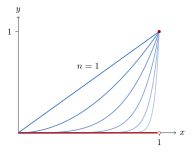
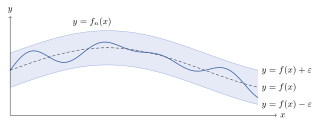
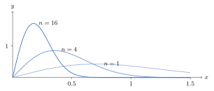
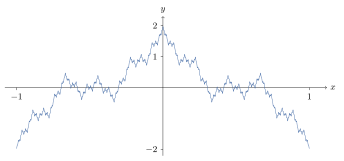

Chapter 11. Sequences and Series of Functions
A sequence of functions can converge in two very different ways. Pointwise convergence asks only that \(f_n(x)\to f(x)\) at each \(x\) separately. It is the obvious definition, and it is too weak. Section 11.1 shows that a pointwise limit of continuous functions need not be continuous, that the integrals of \(f_n\) need not converge to the integral of the limit, and that derivatives behave even worse. Section 11.2 introduces uniform convergence, which asks that \(f_n\) be close to \(f\) at every \(x\) at once. Uniform convergence fixes the first two problems. With an extra hypothesis, it fixes the third. Section 11.3, which is marked with a star, uses uniform convergence to build a continuous function that has a derivative at no point at all. The starred Section 11.4 shows that every continuous function on \([a,b]\) is a uniform limit of polynomials, and the starred Section 11.5 uses uniform convergence to solve differential equations.
11.1 The Problems with Pointwise Convergence
Definition 11.1.1. Let \(E\subset\mathbb{R}\), and let \(\{f_n\}_{n=1}^\infty\) be a sequence of functions \(f_n:E\to\mathbb{R}\). The sequence \(\{f_n\}\) converges pointwise on \(E\) if the sequence of real numbers \(\{f_n(x)\}\) converges for every \(x\in E\). If this is the case, then \(f\) defined by \[f(x)=\lim_{n\to\infty}f_n(x),\quad x\in E,\] defines a function on \(E\). The function \(f\) is called the limit of the sequence \(\{f_n\}\).
In other words, the sequence \(\{f_n\}\) converges pointwise to \(f\) on \(E\) if for each \(x\in E\) and for all \(\varepsilon>0\), there exists an \(N(x,\varepsilon)\in\mathbb{N}\) such that for all \(n\ge N\), \(|f_n(x)-f(x)|<\varepsilon\).
Definition 11.1.2. Let \(E\subset\mathbb{R}\), and let \(\{f_n\}\) be a sequence of functions \(f_n:E\to\mathbb{R}\). For each \(n\in\mathbb{N}\), define a sequence of functions \(\{S_n\}\) by \[S_n(x)=\sum^n_{k=1}f_k(x).\] Then \(\{S_n\}\) is called a series of functions and is denoted by \(\sum f_k\). The series of functions converges pointwise on \(E\) if for each \(x\in E\), \(\{S_n(x)\}\) converges. If the series \(\{S_n\}\) converges pointwise to \(S\), \(S\) is the sum of the series, written \(S=\sum f_k\).
Remark 11.1.3. Let \(\{f_n\}\) be a sequence of functions \(f_n:[a,b]\to\mathbb{R}\) converging pointwise to \(f\) on \([a,b]\).
If each \(f_n\) is continuous at \(c\in [a,b]\), is \(f\) continuous at \(c\); i.e., does \[\lim_{x\to c}\left(\lim_{n\to\infty}f_n(x)\right)=\lim_{n\to\infty}\left(\lim_{x\to c}f_n(x)\right)?\]
If each \(f_n\in\mathcal{R}[a,b]\), is \(f\in\mathcal{R}[a,b]\)? If so, does \[\int^b_a f=\lim_{n\to\infty}\int^b_a f_n,\] i.e., does \[\lim_{n\to\infty}\int^b_a f_n=\int^b_a \lim_{n\to\infty}f_n?\]
If each \(f_n\) is differentiable at \(c\in [a,b]\), is \(f\) differentiable at \(c\)? If so, does \[f'(c)=\lim_{n\to\infty}f_n'(c)?\]
Each question asks whether two limit operations can be done in either order. The next five examples show that the answer to every question is no.
Example 11.1.4. Let \(E=[0,1]\) and for each \(x\in E\), \(n\in\mathbb{N}\), define \(f_n(x)=x^n\). Since \(f_n(1)=1\) for all \(n\in\mathbb{N}\), \(f_n(1)\to 1\). If \(x\in[0,1)\), then \(f_n(x)\to 0\) by Example 3.1.7. Therefore, \[\lim_{n\to\infty}f_n(x)=f(x)=\begin{cases} 0, & x\in[0,1), \\ 1, & x=1.\end{cases}\] But each \(f_n\) is continuous and \(f\) is not. See Figure 11.1.

Example 11.1.5. Let \(f_k(x)=\frac{x^2}{(1+x^2)^k}\) for \(x\in\mathbb{R}\) and consider the series \[S(x)=\sum_{k=0}^\infty f_k(x)=\sum_{k=0}^\infty x^2\left(\frac{1}{1+x^2}\right)^k.\] Notice each \(f_k\) is continuous on \(\mathbb{R}\). If \(x=0\), then \(f_k(0)=0\) and thus \(S(0)=0\). If \(x\ne 0\), \(\frac{1}{1+x^2}<1\) and hence by Example 10.1.3 \[x^2\sum_{k=0}^\infty\left(\frac{1}{1+x^2}\right)^k=x^2\left[\frac{1}{1-\frac{1}{1+x^2}}\right]=1+x^2.\] Thus \(S(x)=1+x^2\) for \(x\ne 0\). So \[S(x)=\begin{cases}0, & x=0, \\ 1+x^2, & x\ne 0,\end{cases}\] which is not continuous on \(\mathbb{R}\).
Example 11.1.6. Let \(\{x_k\}\) be an enumeration of the rational numbers in \([0,1]\). For each \(n\in\mathbb{N}\), define \(f_n:[0,1]\to\mathbb{R}\) as \[f_n(x)=\begin{cases}0, & x=x_k,\quad 1\le k\le n, \\ 1, & \text{otherwise}.\end{cases}\] Since each \(f_n\) is continuous except at \(x_1,\dots,x_n\), \(f_n\in\mathcal{R}[0,1]\) with \(\int^1_0 f_n=1\). This follows from Exercise 9.2.4, since \(f_n\) equals the constant \(1\) except at \(n\) points. But \[\lim_{n\to\infty} f_n(x)=f(x)=\begin{cases} 0, & x\in\mathbb{Q}\cap[0,1],\\ 1, & x\in[0,1]\setminus\mathbb{Q},\end{cases}\] and \(f\notin\mathcal{R}[0,1]\). As in Example 9.1.9, every lower sum of \(f\) is \(0\) and every upper sum is \(1\).
Example 11.1.7. For \(x\in[0,1]\), \(n\in\mathbb{N}\), define \(f_n(x)=nx(1-x^2)^n\). Since each \(f_n\) is continuous, \(f_n\in\mathcal{R}[0,1]\). If \(x=0,1\), then \(f_n(x)=0\). If \(x\in(0,1)\), then \(0<1-x^2<1\), and so \(f_n(x)\to 0\). Indeed, \(\sum_nnx(1-x^2)^n\) converges by Example 10.3.5, so its terms tend to \(0\). Thus for all \(x\in[0,1]\), \[\lim_{n\to\infty} f_n(x)=f(x)=0.\] Thus \(f\in\mathcal{R}[0,1]\) as well. But the substitution \(u=1-x^2\) (Theorem 9.6.3) gives \[\int^1_0 f_n=\frac{1}{2}\cdot\frac{n}{n+1},\] implying \[\lim_{n\to\infty}\int^1_0 f_n=\frac{1}{2}\ne 0=\int^1_0 f.\]
Example 11.1.8. Consider \(f_n(x)=\frac{\sin nx}{n}\) for \(x\in\mathbb{R}\). Since \(|\sin nx|\le 1\) for all \(x\in \mathbb{R}\) and \(n\in\mathbb{N}\), \[\lim_{n\to\infty}f_n(x)=f(x)=0,\] for all \(x\in\mathbb{R}\). But \(f_n'(x)=\cos nx\) which implies \(f_n'(0)=1\) for all \(n\in\mathbb{N}\). Therefore \[\lim_{n\to\infty}f_n'(0)=1\ne 0=f'(0).\]
11.2 The Importance of Uniform Convergence
In each example of Section 11.1, the convergence is slower at some points than at others. For \(f_n(x)=x^n\), the closer \(x\) is to \(1\), the larger \(n\) must be before \(x^n\) is small. No single \(n\) works for every \(x\). Uniform convergence rules this out.
Definition 11.2.1. Let \(E\subset\mathbb{R}\), let \(f:E\to\mathbb{R}\), and let \(\{f_n\}\) be a sequence of functions \(f_n:E\to\mathbb{R}\). The sequence \(\{f_n\}\) converges uniformly to \(f\) on \(E\) if for all \(\varepsilon>0\), there exists an \(N(\varepsilon)\in\mathbb{N}\) such that for all \(n\ge N\), \(|f_n(x)-f(x)|<\varepsilon\) for all \(x\in E\). Similarly, \(\sum f_k\) converges uniformly to \(S\) on \(E\) if the series \(\{S_n\}\) converges uniformly to \(S\) on \(E\).
Remark 11.2.2. The difference from pointwise convergence is the order of the quantifiers. In pointwise convergence, \(N\) may depend on \(x\). In uniform convergence, one \(N\) works for every \(x\in E\) at once. Geometrically, for \(n\ge N\) the graph of \(f_n\) lies inside the band between the graphs of \(f-\varepsilon\) and \(f+\varepsilon\). See Figure 11.2. A sequence that converges uniformly to \(f\) also converges pointwise to \(f\). So to decide whether a sequence converges uniformly, first find its pointwise limit. That is the only possible uniform limit.

Example 11.2.3. For \(x\in[0,1]\), consider \(f_n(x)=x^n\). Assume by way of contradiction that \(f_n\) converges uniformly to \(f\), where \[f(x)=\begin{cases} 0, & x\in[0,1), \\ 1, & x=1.\end{cases}\] Let \(\varepsilon>0\) with \(\varepsilon<1\). So there exists an \(N\in\mathbb{N}\) such that for all \(n\ge N\), \(x^n<\varepsilon\) for all \(x\in[0,1)\). In particular, \(x^N<\varepsilon\) for all \(x\in[0,1)\). Since \(0^N=0\) and \(1^N=1\), by the Intermediate Value Theorem, there exists a \(c\in(0,1)\) such that \(c^N=\varepsilon\), a contradiction.
Example 11.2.4. Consider the series \[\sum^\infty_{k=1}\left[kxe^{-kx^2}-(k-1)xe^{-(k-1)x^2}\right]\] for \(x\in[0,\infty)\). Now \(S_n(x)=nxe^{-nx^2}\), so \(S(x)=0\) for all \(x\in[0,\infty)\). The partial sums telescope. For \(x>0\), \(nxe^{-nx^2}=nx\,r^n\) with \(r=e^{-x^2}\in(0,1)\), which tends to \(0\) by Example 10.3.5 and the \(n\)th Term Test. Assume by way of contradiction this convergence is uniform. Let \(\varepsilon=1\). So there exists an \(N\in\mathbb{N}\) such that for all \(n\ge N\), \[|S_n(x)-S(x)|=nxe^{-nx^2}<1\] for all \(x\in[0,\infty)\). But \[S_n'(x)=ne^{-nx^2}-2n^2x^2e^{-nx^2}=0\] when \(x=\sqrt{\frac{1}{2n}}\), implying \(S_n\) has a maximum value of \[S_n\left(\sqrt{\frac{1}{2n}}\right)=\sqrt{\frac{n}{2e}}>1\] for \(n\ge 6\), a contradiction. (The derivative is positive to the left of \(\sqrt{1/(2n)}\) and negative to the right of it, so this is the maximum.)
Figure 11.3 shows \(S_n\) for \(n=1\), \(4\) and \(16\). Each graph has a bump. As \(n\) grows, the bump gets taller and moves toward \(0\). At each fixed \(x>0\) the bump eventually passes by, so \(S_n(x)\to0\). But the bump never shrinks.

Theorem 11.2.5 (Cauchy Criterion).
Let \(E\subset\mathbb{R}\), and let \(\{f_n\}\) be a sequence of functions \(f_n:E\to\mathbb{R}\). Then \(\{f_n\}\) converges uniformly on \(E\) to some function \(f:E\to\mathbb{R}\) if and only if for all \(\varepsilon>0\), there exists an \(N\in\mathbb{N}\) such that for all \(m,n\ge N\), \(|f_n(x)-f_m(x)|<\varepsilon\) for all \(x\in E\).
Proof. (\(\Rightarrow\)) Suppose \(\{f_n\}\) converges uniformly on \(E\) to \(f\). Let \(\varepsilon>0\). So there exists an \(N\in\mathbb{N}\) such that for all \(n\ge N\), \(|f_n(x)-f(x)|<\frac{\varepsilon}{2}\) for all \(x\in E\). So for all \(m,n\ge N\) and all \(x\in E\), \[\begin{aligned} |f_n(x)-f_m(x)|& = |f_n(x)-f(x)+f(x)-f_m(x)|\\ &\le |f_n(x)-f(x)|+|f(x)-f_m(x)|\\ &< \frac{\varepsilon}{2}+\frac{\varepsilon}{2}=\varepsilon. \end{aligned}\]
(\(\Leftarrow\)) For each \(x\in E\), the sequence \(\{f_n(x)\}\) is Cauchy in \(\mathbb{R}\) and therefore, by Theorem 3.5.2, converges. So \[f(x)=\lim_{n\to \infty}f_n(x)\] exists for every \(x\in E\).
Let \(\varepsilon>0\). So there exists an \(N\in\mathbb{N}\) such that for all \(m,n\ge N\), \(|f_n(x)-f_m(x)|<\frac{\varepsilon}{2}\) for all \(x\in E\). Fix \(M\ge N\). Then \[|f(x)-f_M(x)|=\lim_{n\to\infty}|f_n(x)-f_M(x)|\le \frac{\varepsilon}{2}<\varepsilon\] for all \(x\in E\). The equality holds because \(\bigl||u|-|v|\bigr|\le|u-v|\), and the inequality holds by Theorem 3.2.7. Since \(M\ge N\) was arbitrary, \(\{f_n\}\) converges uniformly to \(f\).
∎
Like the Cauchy Criterion for sequences, this criterion proves uniform convergence without knowing the limit. The proof of the Weierstrass M-Test below uses it in this way.
Corollary 11.2.6. Let \(E\subset\mathbb{R}\), and let \(\{f_k\}\) be a sequence of functions \(f_k:E\to\mathbb{R}\). The series \(\sum f_k\) converges uniformly on \(E\) if and only if for all \(\varepsilon>0\), there exists an \(N\in\mathbb{N}\) such that for all \(m>n\ge N\) and for all \(x\in E\), \[\left|\sum_{k=n+1}^m f_k(x)\right|<\varepsilon.\]
Proof. Apply Theorem 11.2.5 to the series \(\{S_n\}\) where \(S_n(x)=\sum_{k=1}^n f_k(x)\).
∎
Theorem 11.2.7. Let \(E\subset\mathbb{R}\), let \(f:E\to\mathbb{R}\), and let \(\{f_n\}\) be a sequence of functions \(f_n:E\to\mathbb{R}\) that converges pointwise to \(f\) on \(E\). For each \(n\in\mathbb{N}\), set \[M_n=\sup_{x\in E}|f_n(x)-f(x)|.\] Then \(\{f_n\}\) converges uniformly to \(f\) on \(E\) if and only if \(M_n\to 0\). (Some \(M_n\) may be \(\infty\). Then \(M_n\to0\) means \(M_n\) is finite for all large \(n\) and tends to \(0\).)
Proof. See Exercise 11.2.1.
∎
Example 11.2.8. Consider \(f_n(x)=x^n\), \(x\in[0,1]\). Then \(\{f_n\}\) converges pointwise to \[f(x)=\begin{cases} 0, & x\in[0,1), \\ 1, & x=1.\end{cases}\] Notice \[M_n=\sup_{x\in[0,1]}|f_n(x)-f(x)|=1,\] for all \(n\in \mathbb{N}\). So \(M_n\to 1\) and \(\{f_n\}\) does not converge uniformly to \(f\).
Example 11.2.9. Consider \(S_n(x)=nxe^{-nx^2}\), which converges pointwise to \(S(x)=0\). Notice \[M_n=\sup_{x\in[0,\infty)} |S_n(x)-S(x)|=\sqrt{\frac{n}{2e}}.\] So \(M_n\to \infty\) and \(\{S_n\}\) does not converge uniformly to \(S\).
Let \(a>0\) and consider \(\{S_n\}\) on \([a,\infty)\). Then since \(S_n\) attains its maximum value at \(x=\sqrt{\frac{1}{2n}}\to 0\) as \(n\to \infty\), \(S_n\) attains its maximum value on \([a,\infty)\) at \(x=a\) when \(\sqrt{\frac{1}{2n}}<a\). This is because \(S_n\) is decreasing on \(\left[\sqrt{1/(2n)},\infty\right)\). So \[M_n=\sup_{x\in[a,\infty)} |S_n(x)-S(x)|=nae^{-na^2}\to 0.\] Thus \(\{S_n\}\) converges uniformly to \(S\) on \([a,\infty)\).
Proof Technique (Showing Convergence Is Not Uniform).
First find the pointwise limit \(f\). If the convergence is uniform at all, it is uniform to \(f\). Then there are three common ways to show it is not uniform. One is to compute or bound \(M_n=\sup_{x\in E}|f_n(x)-f(x)|\) and show \(M_n\not\to0\), as in Examples 11.2.8 and 11.2.9. Another is to find one \(\varepsilon>0\) and, for infinitely many \(n\), a point \(x_n\in E\) with \(|f_n(x_n)-f(x_n)|\ge\varepsilon\). In Example 11.2.4, the points \(x_n=\sqrt{1/(2n)}\) work with \(\varepsilon=1\). The point \(x_n\) is allowed to move with \(n\), and it usually has to. The third way applies when every \(f_n\) is continuous. If the limit \(f\) is not continuous, the convergence is not uniform, by Corollary 11.2.16 below.
Theorem 11.2.10 (Weierstrass M-Test).
Let \(E\subset\mathbb{R}\). Suppose \(\{f_k\}\) is a sequence of functions \(f_k:E\to\mathbb{R}\), and \(\{M_k\}\) is a sequence of real numbers satisfying \(|f_k(x)|\le M_k\) for all \(x\in E\), \(k\in \mathbb{N}\). If \(\sum M_k\) converges, then \(\sum f_k\) converges uniformly and absolutely on \(E\).
Proof. The fact that \(\sum f_k\) converges absolutely for each \(x\in E\) follows from the Comparison Test. Let \(S_n(x)=\sum_{k=1}^n f_k(x)\). Then, for \(m>n\), \[|S_n(x)-S_m(x)|=\left|\sum_{k=n+1}^m f_k(x)\right|\le \sum^m_{k=n+1}|f_k(x)|\le \sum^m_{k=n+1} M_k.\] Uniform convergence now follows from the Cauchy Criterion. In detail, let \(\varepsilon>0\). By the Cauchy Criterion for series (Theorem 10.2.1), there is an \(N\in\mathbb{N}\) with \(\sum_{k=n+1}^mM_k<\varepsilon\) for all \(m>n\ge N\). Then \(|S_n(x)-S_m(x)|<\varepsilon\) for all \(m>n\ge N\) and all \(x\in E\). So \(\sum f_k\) converges uniformly on \(E\) by Corollary 11.2.6.
∎
Example 11.2.11. Consider \(\sum_{k=1}^\infty \frac{\cos kx}{k^p}\), \(p>1\), \(x\in \mathbb{R}\). Then \[\left|\frac{\cos kx}{k^p}\right|\le \frac{1}{k^p}=M_k.\] Since \(\sum M_k\) is a \(p\)-series with \(p>1\), \(\sum M_k\) converges. So \(\sum_{k=1}^\infty \frac{\cos kx}{k^p}\) converges uniformly and absolutely on \(\mathbb{R}\). Similarly, \(\sum_{k=1}^\infty \frac{\sin kx}{k^p}\) converges uniformly and absolutely on \(\mathbb{R}\).
Example 11.2.12. Consider the series \(\sum_{k=1}^\infty \left(\frac{x}{2}\right)^k\). Let \(a\in[0,2)\). For all \(x\in[-a,a]\), \[\left|\left(\frac{x}{2}\right)^k\right|\le \left(\frac{a}{2}\right)^k=M_k.\] Since \(\frac{a}{2}<1\), \(\sum M_k\) converges. So \(\sum_{k=1}^\infty \left(\frac{x}{2}\right)^k\) converges uniformly on \([-a,a]\) for any \(a\in[0,2)\). However, an exercise (Exercise 11.2.2) will show this series does not converge uniformly on \((-2,2)\).
Example 11.2.13. In general, uniform convergence does not imply absolute convergence. Consider the series \(\sum^\infty_{k=1}(-1)^{k+1}\frac{x^k}{k}\), \(x\in[0,1]\). Set \(b_k(x)=\frac{x^k}{k}\). Then, for \(x\in[0,1]\), \(b_1(x)\ge b_2(x)\ge \cdots\ge 0\) and \(b_k(x)\to 0\). Thus by the Alternating Series Test (Theorem 10.2.17), the series \(\sum (-1)^{k+1}b_k(x)\) converges for all \(x\in[0,1]\). Now let \(S(x)=\sum^{\infty}_{k=1}(-1)^{k+1}b_k(x)\), \(S_n(x)=\sum^{n}_{k=1}(-1)^{k+1}b_k(x)\). Then by Theorem 10.2.20, \[M_n=\sup_{x\in[0,1]}|S(x)-S_n(x)|\le \sup_{x\in[0,1]}b_{n+1}(x)=\frac{1}{n+1}.\] Since \(M_n\to 0\), by Theorem 11.2.7, \(\{S_n\}\) converges uniformly to \(S\) on \([0,1]\). However, notice if \(x=1\), the series does not converge absolutely.
Example 11.2.14. In general, absolute convergence does not imply uniform convergence. Consider the series \(\sum_{k=0}^\infty x^2(1+x^2)^{-k}\). This series converges absolutely to \[f(x)=\begin{cases} 0 , & x=0,\\ 1+x^2, & x\ne 0,\end{cases}\] on all of \(\mathbb{R}\). However, Corollary 11.2.16 below will show the convergence is not uniform. (The terms are nonnegative, so convergence and absolute convergence are the same here. See Example 11.1.5.)
The rest of this section answers the three questions of Remark 11.1.3. Uniform convergence lets limits pass through limits, continuity and integrals. For derivatives, the derivatives themselves must converge uniformly.
Theorem 11.2.15. Let \(E\subset \mathbb{R}\), let \(f:E\to\mathbb{R}\), and suppose \(\{f_n\}\) is a sequence of functions \(f_n:E\to\mathbb{R}\) that converges uniformly to \(f\) on \(E\). Let \(c\) be a limit point of \(E\), and suppose that for each \(n\in\mathbb{N}\), \[\lim_{x\to c}f_n(x)=A_n.\] Then the sequence \(\{A_n\}\) converges and \[\lim_{x\to c}f(x)=\lim_{n\to \infty} A_n;\] i.e., \[\lim_{x\to c}\left(\lim_{n\to \infty}f_n(x)\right)=\lim_{n\to \infty}\left(\lim_{x\to c} f_n(x)\right).\]
Proof.
The first step shows that the numbers \(A_n\) converge. Their limit is the candidate for the limit of \(f\) at \(c\). Let \(\varepsilon>0\). By the Cauchy Criterion (Theorem 11.2.5), there is an \(N\in\mathbb{N}\) such that \(|f_n(x)-f_m(x)|<\varepsilon\) for all \(x\in E\) and all \(m,n\ge N\). Fix \(m,n\ge N\). By the limit laws, \(f_n(x)-f_m(x)\to A_n-A_m\) as \(x\to c\), and so \(|f_n(x)-f_m(x)|\to|A_n-A_m|\), since \(\bigl||u|-|v|\bigr|\le|u-v|\). So \(|A_n-A_m|\le\varepsilon\), by Theorem 6.1.15. Thus \(\{A_n\}\) is a Cauchy sequence. By Theorem 3.5.2, it converges. Let \(A=\lim_{n\to\infty}A_n\).
The second step shows that \(f\) has limit \(A\) at \(c\). Let \(\varepsilon>0\). For all large \(n\), both \(|f(x)-f_n(x)|<\frac\varepsilon 3\) for every \(x\in E\), and \(|A_n-A|<\frac\varepsilon 3\). Fix one such \(n\). Since \(f_n(x)\to A_n\) as \(x\to c\), there is a \(\delta>0\) such that \(|f_n(x)-A_n|<\frac\varepsilon 3\) for all \(x\in E\) with \(0<|x-c|<\delta\). For those \(x\), \[\begin{aligned} |f(x)-A|&\le |f(x)-f_n(x)|+|f_n(x)-A_n|+|A_n-A|\\ &<\frac{\varepsilon}{3}+\frac{\varepsilon}{3}+\frac{\varepsilon}{3}=\varepsilon. \end{aligned}\] So \(\lim_{x\to c}f(x)=A\).
∎
Proof Technique (The \(\varepsilon/3\) Argument).
The second half of the proof of Theorem 11.2.15 is a pattern that appears again and again. To show \(f\) has a property, approximate \(f\) by a function \(f_n\) that is known to have it. Then go from \(f\) to \(f_n\), use the property of \(f_n\), and come back to the target. That is three steps, so give each step \(\frac\varepsilon 3\). The order of choices matters. First choose one \(n\), using uniform convergence so that \(f_n\) is close to \(f\) at every point at once. Only then use the property of that one \(f_n\). Pointwise convergence is not enough, because the \(\delta\) for \(f_n\) would come first and \(n\) would then depend on \(x\). The proofs of Corollary 11.2.16 and Theorem 11.2.18 use the same idea.
Corollary 11.2.16. Let \(E\subset\mathbb{R}\).
If \(\{f_n\}\) is a sequence of continuous functions \(f_n:E\to\mathbb{R}\), and if \(\{f_n\}\) converges uniformly to \(f\) on \(E\), then \(f\) is continuous on \(E\).
If \(\{f_n\}\) is a sequence of continuous functions \(f_n:E\to\mathbb{R}\), and if \(\sum f_n\) converges uniformly on \(E\), then \(S(x)=\sum f_n(x)\) is continuous on \(E\).
Proof.
If \(c\in E\) is an isolated point of \(E\), then \(f\) is automatically continuous at \(c\) (Remark 6.3.7). Suppose \(c\in E\) is a limit point of \(E\). Then since \(f_n\) is continuous for each \(n\in\mathbb{N}\), \[\lim_{x\to c}f_n(x)=f_n(c),\] for all \(n\in\mathbb{N}\). Then by Theorem 11.2.15, \[\lim_{x\to c}f(x)=\lim_{x\to c}\left(\lim_{n\to\infty}f_n(x)\right)=\lim_{n\to \infty}\left(\lim_{x\to c}f_n(x)\right)=\lim_{n\to \infty} f_n(c)=f(c).\] So \(f\) is continuous at \(c\).
Let \(S_n(x)=\sum^n_{k=1}f_k(x)\). Then for each \(n\in\mathbb{N}\), \(S_n\) is continuous on \(E\). Since \(\{S_n\}\) converges uniformly to \(S\) on \(E\), by (1), \(S\) is continuous on \(E\).
∎
So the series of Examples 11.1.5 and 11.2.14 does not converge uniformly on \(\mathbb{R}\), because its sum is not continuous at \(0\). In the same way, \(x^n\) does not converge uniformly on \([0,1]\).
The converse of Corollary 11.2.16 is false. The limit can be continuous even when the convergence is not uniform, as Example 11.2.4 shows. Dini’s Theorem gives a case where it is true. On a compact set, a decreasing sequence of continuous functions with a continuous limit converges uniformly.
Theorem 11.2.17 (Dini).
Suppose \(K\subset \mathbb{R}\) is compact and \(\{f_n\}\) is a sequence of continuous functions \(f_n:K\to\mathbb{R}\) such that \(\{f_n\}\) converges pointwise on \(K\) to a continuous function \(f\), and \(f_n(x)\ge f_{n+1}(x)\) for all \(x\in K\) and for all \(n\in\mathbb{N}\). Then \(\{f_n\}\) converges uniformly to \(f\) on \(K\).
Proof.
For each \(n\in\mathbb{N}\), let \(g_n=f_n-f\). Each \(g_n\) is continuous on \(K\). Also \(g_n(x)\ge g_{n+1}(x)\ge0\) and \(g_n(x)\to0\) for every \(x\in K\). It is enough to show \(g_n\to0\) uniformly on \(K\).
Let \(\varepsilon>0\). For each \(n\in\mathbb{N}\), let \[K_n=\{x\in K:g_n(x)\ge \varepsilon\},\] the set of points where \(g_n\) is still not within \(\varepsilon\) of \(0\). The goal is to show \(K_N=\emptyset\) for some \(N\).
Each \(K_n\) is closed. To see this, let \(c\) be a limit point of \(K_n\). By Theorem 4.1.23, there is a sequence \(\{x_k\}\) in \(K_n\) with \(x_k\to c\). Then \(c\in K\), since \(K\) is closed (Theorem 4.2.9). Since \(g_n\) is continuous and \(g_n(x_k)\ge\varepsilon\) for all \(k\), \(g_n(c)=\lim_{k\to\infty}g_n(x_k)\ge\varepsilon\). So \(c\in K_n\). By Theorem 4.1.24, \(K_n\) is closed. As a closed subset of \(K\), it is compact, by Lemma 4.2.10.
The sets are nested. If \(x\in K_{n+1}\), then \(g_n(x)\ge g_{n+1}(x)\ge\varepsilon\), so \(x\in K_n\). So \(K_{n+1}\subset K_n\).
The sets have empty intersection. For each \(x\in K\), \(g_n(x)\to0\), so \(g_n(x)<\varepsilon\) for some \(n\), and then \(x\notin K_n\).
If every \(K_n\) were nonempty, Cantor’s Intersection Theorem (Theorem 4.2.12) would make \(\bigcap_{n=1}^\infty K_n\) nonempty. So \(K_N=\emptyset\) for some \(N\in\mathbb{N}\). Since the sets are nested, \(K_n=\emptyset\) for all \(n\ge N\). This means \(0\le g_n(x)<\varepsilon\), that is, \(|f_n(x)-f(x)|<\varepsilon\), for all \(x\in K\) and all \(n\ge N\). So \(\{f_n\}\) converges uniformly to \(f\) on \(K\).
∎
All three hypotheses matter. On \([0,1)\), which is not compact, \(f_n(x)=x^n\) decreases to the continuous function \(0\), but not uniformly. On \([0,1]\), the same sequence decreases to a function that is not continuous. See Exercise 11.2.8 for the monotonicity hypothesis. The theorem also holds for increasing sequences. Apply it to \(\{-f_n\}\).
Theorem 11.2.18. Suppose \(\{f_n\}\) is a sequence of functions \(f_n:[a,b]\to\mathbb{R}\) with \(f_n\in\mathcal{R}[a,b]\) for all \(n\in\mathbb{N}\). Also, suppose the sequence \(\{f_n\}\) converges uniformly to \(f\) on \([a,b]\). Then \(f\in\mathcal{R}[a,b]\) and \[\int^b_a f=\lim_{n\to\infty} \int^b_a f_n;\] i.e., \[\lim_{n\to\infty} \int^b_a f_n=\int^b_a \lim_{n\to \infty}f_n.\]
Proof.
For each \(n\in\mathbb{N}\), let \(\varepsilon_n=\sup_{x\in[a,b]}|f_n(x)-f(x)|\). By Theorem 11.2.7, \(\varepsilon_n\to0\). In particular, \(\varepsilon_n\) is finite for all large \(n\). For such \(n\), \(|f(x)|\le|f_n(x)|+\varepsilon_n\) for all \(x\), so \(f\) is bounded, since \(f_n\) is.
With \(f\) bounded, the next step shows that \(f\) is integrable. Let \(\varepsilon>0\). Choose \(n\) with \(\varepsilon_n<\frac{\varepsilon}{3(b-a)}\). Since \(f_n\in\mathcal{R}[a,b]\), Riemann’s Criterion (Theorem 9.2.1) gives a partition \(\mathcal{P}=\{x_0,\dots,x_k\}\) of \([a,b]\) with \(\mathcal{U}(\mathcal{P},f_n)-\mathcal{L}(\mathcal{P},f_n)<\frac\varepsilon 3\). On each \([x_{i-1},x_i]\), \(f_n(x)-\varepsilon_n\le f(x)\le f_n(x)+\varepsilon_n\). So the supremum of \(f\) there is at most the supremum of \(f_n\) plus \(\varepsilon_n\), and the infimum of \(f\) there is at least the infimum of \(f_n\) minus \(\varepsilon_n\). Summing over \(i\), \[\mathcal{U}(\mathcal{P},f)-\mathcal{L}(\mathcal{P},f)\le\mathcal{U}(\mathcal{P},f_n)-\mathcal{L}(\mathcal{P},f_n)+2\varepsilon_n(b-a)<\frac\varepsilon 3+\frac{2\varepsilon}{3}=\varepsilon.\] So \(f\in\mathcal{R}[a,b]\) by Riemann’s Criterion.
It remains to show that the integrals converge. For all large \(n\), by Theorems 9.2.11 and 9.2.12 and Exercise 9.2.3, \[\left|\int^b_a f-\int^b_a f_n\right|=\left|\int_a^b(f-f_n)\right|\le\int_a^b|f-f_n|\le \varepsilon_n(b-a).\] Since \(\varepsilon_n\to0\), \(\lim_{n\to\infty}\int^b_a f_n=\int^b_a f\).
∎
Corollary 11.2.19. If \(f_k\in\mathcal{R}[a,b]\) for all \(k\in\mathbb{N}\) and if \(S(x)=\sum f_k(x)\), \(x\in[a,b]\), where the series converges uniformly on \([a,b]\), then \[\int^b_a S=\sum\int^b_a f_k.\]
Proof.
Let \(S_n=\sum_{k=1}^nf_k\). By Theorem 9.2.11, \(S_n\in\mathcal{R}[a,b]\) and \(\int_a^bS_n=\sum_{k=1}^n\int_a^bf_k\). These are the partial sums of \(\sum\int_a^bf_k\). By Theorem 11.2.18, they converge to \(\int_a^bS\).
∎
Example 11.2.20. Notice even though for \(f_n(x)=x^n\), \(\{f_n\}\) converges pointwise and not uniformly to \[f(x)=\begin{cases}0, & x\in[0,1),\\ 1, & x=1,\end{cases}\] it is still true that \[\lim_{n\to\infty}\int^1_0 f_n=\lim_{n\to\infty}\frac{1}{n+1}=0=\int^1_0 f.\] So uniform convergence is sufficient for the conclusion of Theorem 11.2.18, but not necessary. The next theorem gives a different sufficient condition.
Theorem 11.2.21 (Bounded Convergence Theorem).
Let \(\{f_n\}\) be a sequence of functions \(f_n:[a,b]\to\mathbb{R}\) converging pointwise to \(f\) on \([a,b]\) with \(f_n\in\mathcal{R}[a,b]\) for all \(n\in\mathbb{N}\) and \(f\in\mathcal{R}[a,b]\). Suppose there exists a positive constant \(M\) such that \(|f_n(x)|\le M\) for all \(x\in[a,b]\) and for all \(n\in\mathbb{N}\). Then \[\int^b_a f=\lim_{n\to\infty} \int^b_a f_n.\]
This theorem is due to Cesare Arzelà. Its proof using only Riemann integrals is long. It follows quickly from the Bounded Convergence Theorem for the Lebesgue integral, Theorem 16.3.6, since Riemann integrable functions are Lebesgue integrable with the same integral. See Corollary 16.3.8. The hypothesis \(f\in\mathcal{R}[a,b]\) cannot be dropped, as Example 11.1.6 shows. Without the bound \(M\), the conclusion can fail, as Example 11.1.7 shows.
Theorem 11.2.22. Suppose \(\{f_n\}\) is a sequence of differentiable functions on \([a,b]\). If \(\{f_n'\}\) converges uniformly on \([a,b]\) and \(\{f_n(x_0)\}\) converges for some \(x_0\in[a,b]\), then \(\{f_n\}\) converges uniformly to a function \(f\) on \([a,b]\) with \[f'(x)=\lim_{n\to\infty}f_n'(x)\] for all \(x\in[a,b]\).
Proof.
The proof starts with an estimate that controls \(f_n-f_m\) on all of \([a,b]\). Let \(\varepsilon>0\). Since \(\{f_n(x_0)\}\) converges and \(\{f_n'\}\) converges uniformly, there is an \(N\in\mathbb{N}\) such that for all \(m,n\ge N\), \[|f_n(x_0)-f_m(x_0)|<\frac{\varepsilon}{2}\quad\text{and}\quad|f_n'(t)-f_m'(t)|<\frac{\varepsilon}{2(b-a)}\text{ for all }t\in[a,b].\] Fix \(m,n\ge N\), and let \(h=f_n-f_m\). Then \(h\) is differentiable on \([a,b]\) and \(|h'(t)|<\frac{\varepsilon}{2(b-a)}\) for all \(t\). Let \(x,y\in[a,b]\) with \(x\ne y\). By the Mean Value Theorem, \(h(x)-h(y)=h'(t)(x-y)\) for some \(t\) between \(x\) and \(y\). So \[|h(x)-h(y)|\le\frac{\varepsilon}{2(b-a)}|x-y|\quad\text{for all }x,y\in[a,b]. \tag{11.2.1}\] This also holds when \(x=y\).
The estimate first shows that \(\{f_n\}\) converges uniformly. Take \(y=x_0\) in (11.2.1). Since \(|x-x_0|\le b-a\), for all \(x\in[a,b]\), \[|f_n(x)-f_m(x)|=|h(x)|\le|h(x)-h(x_0)|+|h(x_0)|<\frac\varepsilon 2+\frac\varepsilon 2=\varepsilon.\] This holds for all \(m,n\ge N\). So by Theorem 11.2.5, \(\{f_n\}\) converges uniformly on \([a,b]\) to a function \(f\).
It remains to compute the derivative of \(f\). Fix \(c\in[a,b]\) and let \(E=[a,b]\setminus\{c\}\). For \(x\in E\), define \[q_n(x)=\frac{f_n(x)-f_n(c)}{x-c}\quad\text{and}\quad q(x)=\frac{f(x)-f(c)}{x-c}.\] Then \(q_n(x)\to q(x)\) for every \(x\in E\), and \(\lim_{x\to c}q_n(x)=f_n'(c)\) for each \(n\). Taking \(y=c\) in (11.2.1), for all \(m,n\ge N\) and all \(x\in E\), \[|q_n(x)-q_m(x)|=\frac{|h(x)-h(c)|}{|x-c|}\le\frac{\varepsilon}{2(b-a)}.\] Since \(\varepsilon>0\) was arbitrary, \(\{q_n\}\) converges uniformly on \(E\), by Theorem 11.2.5. Its limit is \(q\). The point \(c\) is a limit point of \(E\). So by Theorem 11.2.15, \[f'(c)=\lim_{x\to c}q(x)=\lim_{n\to\infty}\left(\lim_{x\to c}q_n(x)\right)=\lim_{n\to\infty}f_n'(c).\]
∎
Uniform convergence of \(\{f_n\}\) alone is not enough. In Example 11.1.8, \(\left|\frac{\sin nx}{n}\right|\le\frac1n\), so \(f_n\to0\) uniformly on \(\mathbb{R}\). But \(f_n'(0)=1\) for all \(n\).
Exercises
Exercise 11.2.1. Prove Theorem 11.2.7. [Hint]
Exercise 11.2.2. Show the series \(\sum_{k=1}^\infty \left(\frac{x}{2}\right)^k\) does not converge uniformly on \((-2,2)\). [Hint]
Exercise 11.2.3. For \(n\in\mathbb{N}\), let \(f_n(x)=x^n(1+x^n)\), \(x\in[0,1]\). Prove the sequence \(\{f_n\}\) does not converge uniformly on \([0,1]\). [Hint]
Exercise 11.2.4. Prove the series \(\sum^\infty_{k=0}x(1-x)^k\) does not converge uniformly for \(0\le x\le 1\). [Hint]
Exercise 11.2.5. If \(\sum^\infty_{k=0}a_k\) converges absolutely, prove that \(\sum^\infty_{k=0}a_kx^k\) converges uniformly on \([-1,1]\). [Hint]
Exercise 11.2.6. If \(f\in\mathcal{R}[0,1]\), use the Bounded Convergence Theorem to prove that \[\lim_{n\to\infty}\int^1_0x^nf(x)\,dx=0.\] [Hint]
Exercise 11.2.7. Suppose \(\{f_n\}\) is a sequence of continuous functions on \([a,b]\) that converges uniformly on \([a,b]\). For each \(x\in[a,b]\), set \(g(x)=\sup_{n\in\mathbb{N}}\{f_n(x)\}\).
Prove that \(g\) is continuous on \([a,b]\).
Show by example that this conclusion may be false if the sequence \(\{f_n\}\) converges only pointwise on \([a,b]\).
Exercise 11.2.8. Find continuous functions \(f_n:[0,1]\to\mathbb{R}\) that converge pointwise to \(0\), with \(0\le f_n(x)\le1\), but not uniformly. (So Dini’s Theorem needs the monotonicity hypothesis.) [Hint]
Exercise 11.2.9. Give a second proof of Dini’s Theorem, by contradiction. If the convergence is not uniform, find an \(\varepsilon>0\) and points \(x_n\in K\) with \(g_n(x_n)\ge\varepsilon\) for all \(n\). Use the Bolzano–Weierstrass Theorem to get a subsequence \(x_{n_j}\to c\in K\). Then show \(g_m(c)\ge\varepsilon\) for every \(m\).
Exercise 11.2.10. Prove Theorem 11.2.22 under the stronger hypothesis that each \(f_n'\) is continuous. [Hint]
Exercise 11.2.11. Suppose each \(f_n:E\to\mathbb{R}\) is bounded and \(f_n\to f\) uniformly on \(E\). Prove that \(f\) is bounded, and that there is one \(M>0\) with \(|f_n(x)|\le M\) for all \(n\in\mathbb{N}\) and all \(x\in E\). [Hint]
11.3 The Weierstrass Function*
This section can be skipped. Nothing later in the book depends on it.
A continuous function can fail to be differentiable at a point, as \(|x|\) does at \(0\). It can fail at infinitely many points, as a zigzag does at each corner. For much of the nineteenth century, many mathematicians believed that a continuous function must still be differentiable at most points. Weierstrass’s example shows this is false. His function is continuous on all of \(\mathbb{R}\) and differentiable at no point. It is the sum of a uniformly convergent series of cosine waves. Each wave oscillates much faster than the one before, and its height is half as large. See Figure 11.4.

Example 11.3.1.
Consider the function \[f(x)=\sum^\infty_{k=0}\frac{\cos(a^k\pi x)}{2^k},\] where \(a\) is an odd positive integer satisfying \(a>3\pi+2\). For example, \(a=13\) works.
Since \(\left|\frac{\cos(a^k \pi x)}{2^k}\right|\le \frac{1}{2^k}\) and \(\sum\frac{1}{2^k}\) converges, by the Weierstrass M-Test, \(\sum\frac{\cos(a^k\pi x)}{2^k}\) converges uniformly and absolutely, and hence by Corollary 11.2.16, \(f\) is continuous on \(\mathbb{R}\).
Now fix \(x\in\mathbb{R}\). The rest of the example shows \(f\) is not differentiable at \(x\). For \(n\in\mathbb{N}\), set \[S_n(x)=\sum^{n-1}_{k=0}\frac{\cos(a^k\pi x)}{2^k},\] and \[R_n(x)=\sum^{\infty}_{k=n}\frac{\cos(a^k\pi x)}{2^k}.\] Then for \(h>0\), \[\frac{f(x+h)-f(x)}{h}=\frac{S_n(x+h)-S_n(x)}{h}+\frac{R_n(x+h)-R_n(x)}{h}.\]
The first step shows that the \(S_n\) part is not too large. By the Mean Value Theorem, for each \(k\) there exists a \(\xi\in(0,h)\) with \[\frac{\cos(a^k\pi(x+h))-\cos(a^k\pi x)}{h}=-a^k\pi\sin(a^k\pi(x+\xi)).\] Since \[|-a^k\pi\sin(a^k\pi(x+\xi))|\le a^k\pi,\] \[\begin{aligned} \left|\frac{S_n(x+h)-S_n(x)}{h}\right|&\le \sum^{n-1}_{k=0}\frac{1}{2^k}\left|\frac{\cos(a^k\pi(x+h))-\cos(a^k\pi x)}{h}\right|\\ &\le \pi\sum^{n-1}_{k=0}\left(\frac{a}{2}\right)^k\\ &=\frac{\pi\left(1-\left(\frac{a}{2}\right)^n\right)}{1-\frac{a}{2}}\\ &<\frac{2\pi}{a-2}\left(\frac{a}{2}\right)^n. \end{aligned}\]
The second step chooses \(h\) so that the \(R_n\) part is large. Write \(a^nx=k_n+\delta_n\), where \(k_n\in\mathbb{Z}\) and \(-\frac{1}{2}\le \delta_n<\frac{1}{2}\). Set \[h_n=\frac{1-\delta_n}{a^n}.\] Since \(-\frac{1}{2}\le \delta_n<\frac{1}{2}\), \(\frac{3}{2}\ge 1-\delta_n>\frac{1}{2}\). Therefore, \[\frac{2}{3}a^n\le \frac{1}{h_n}<2a^n.\] In particular \(h_n>0\) and \(h_n\to0\) as \(n\to\infty\).
With this choice of \(h\), the third step shows that the \(R_n\) part is large. For \(k\ge n\), \[\begin{aligned} a^k\pi(x+h_n)&=a^{k-n}a^n\pi(x+h_n)\\ &=a^{k-n}\pi(a^nx+(1-\delta_n))\\ &=a^{k-n}\pi(k_n+1). \end{aligned}\] Since \(a^{k-n}\) is odd and \(k_n\) is an integer, \[\cos(a^k\pi(x+h_n))=\cos(a^{k-n}\pi(k_n+1))=(-1)^{k_n+1}.\] Also, \[a^k\pi x=a^{k-n}a^n\pi x=a^{k-n}\pi(k_n+\delta_n).\] Using the trigonometric identity \[\cos(A+B)=\cos A\cos B-\sin A\sin B,\] and the fact that \(\sin(k_n a^{k-n}\pi)=0\), \[\begin{aligned} \cos(a^k\pi x)&=\cos(a^{k-n}\pi k_n+a^{k-n}\pi\delta_n)\\ &=\cos(a^{k-n}k_n\pi)\cos(a^{k-n}\delta_n\pi)\\ &=(-1)^{k_n}\cos(a^{k-n}\delta_n\pi). \end{aligned}\] Therefore, \[\begin{aligned} \cos(a^k\pi(x+h_n))-\cos(a^k\pi x)&=(-1)^{k_n+1}-(-1)^{k_n}\cos(a^{k-n}\delta_n\pi)\\ &=(-1)^{k_n+1}(1+\cos(a^{k-n}\delta_n\pi)). \end{aligned}\] So \[\begin{aligned} \left|\frac{R_n(x+h_n)-R_n(x)}{h_n}\right|&=\left|\sum^\infty_{k=n}\frac{1}{2^k} \cdot\frac{\cos(a^k\pi(x+h_n))-\cos(a^k\pi x)}{h_n}\right|\\ &=\left|\sum^\infty_{k=n}\frac{(-1)^{k_n+1}}{h_n}\cdot\frac{1+\cos(a^{k-n}\delta_n\pi)}{2^k}\right|\\ &=\frac{1}{h_n}\sum^\infty_{k=n}\frac{1+\cos(a^{k-n}\delta_n\pi)}{2^k}\\ &\ge \frac{1}{h_n}\cdot\frac{1+\cos(\delta_n\pi)}{2^n}. \end{aligned}\] The last step keeps only the term \(k=n\). The other terms are nonnegative. Since \(-\frac{1}{2}\le \delta_n<\frac{1}{2}\), \(\cos(\delta_n\pi)\ge 0\). Therefore, \[\left|\frac{R_n(x+h_n)-R_n(x)}{h_n}\right|\ge \frac{1}{h_n}\cdot\frac{1}{2^n}\ge \frac{2}{3}\left(\frac{a}{2}\right)^n.\]
The last step puts the two parts together. Therefore, by using the Reverse Triangle Inequality, \[\begin{aligned} \left|\frac{f(x+h_n)-f(x)}{h_n}\right|&\ge \left|\frac{R_n(x+h_n)-R_n(x)}{h_n}\right|-\left|\frac{S_n(x+h_n)-S_n(x)}{h_n}\right|\\ &\ge\frac{2}{3}\left(\frac{a}{2}\right)^n-\frac{2\pi}{a-2}\left(\frac{a}{2}\right)^n\\ &=\left(\frac{a}{2}\right)^n\left(\frac{2}{3}-\frac{2\pi}{a-2}\right). \end{aligned}\] Since \(\frac{a}{2}>1\) and \(\frac{2}{3}-\frac{2\pi}{a-2}>0\), \[\left|\frac{f(x+h_n)-f(x)}{h_n}\right|\to\infty\] as \(n\to\infty\). If \(f'(x)\) existed, then by Theorem 6.1.18 these difference quotients would converge to \(f'(x)\), since \(h_n\to0\) and \(h_n\ne0\). A convergent sequence is bounded. So \(f\) is not differentiable at \(x\). Since \(x\in\mathbb{R}\) was arbitrary, \(f\) is differentiable at no point of \(\mathbb{R}\).
11.4 The Weierstrass Approximation Theorem*
Section 11.3 built a continuous function with no derivative anywhere. This section proves that even such a function is a uniform limit of polynomials, the smoothest functions there are. The proof, due to Sergei Bernstein, writes down the polynomials explicitly. This section can be skipped. Nothing later depends on it.
Definition 11.4.1. Let \(f:[0,1]\to\mathbb{R}\) and \(n\in\mathbb{N}\). The Bernstein polynomial of \(f\) of degree \(n\) is \[B_nf(x)=\sum_{k=0}^nf\left(\frac kn\right)\binom nkx^k(1-x)^{n-k}.\]
Write \(p_{n,k}(x)=\binom nkx^k(1-x)^{n-k}\). For \(x\in[0,1]\), these numbers are at least \(0\). So \(B_nf(x)\) is a weighted average of the values \(f\left(\frac kn\right)\). The next lemma shows the weights add to \(1\) and are concentrated where \(\frac kn\) is close to \(x\).
Lemma 11.4.2. For \(n\in\mathbb{N}\) and \(x\in\mathbb{R}\), \[\sum_{k=0}^np_{n,k}(x)=1,\qquad\sum_{k=0}^nkp_{n,k}(x)=nx,\qquad\sum_{k=0}^n(k-nx)^2p_{n,k}(x)=nx(1-x).\]
Proof.
The first sum is \((x+(1-x))^n=1\), by the Binomial Theorem (Exercise 9.3.3). For \(k\ge1\), \(k\binom nk=n\binom{n-1}{k-1}\). So \[\sum_{k=0}^nkp_{n,k}(x)=nx\sum_{k=1}^n\binom{n-1}{k-1}x^{k-1}(1-x)^{n-k}=nx\bigl(x+(1-x)\bigr)^{n-1}=nx.\] In the same way, \(k(k-1)\binom nk=n(n-1)\binom{n-2}{k-2}\) for \(k\ge2\), so \(\sum k(k-1)p_{n,k}(x)=n(n-1)x^2\). (When \(n=1\) both sides are \(0\).) Then \[\sum_{k=0}^n(k-nx)^2p_{n,k}=\sum k(k-1)p_{n,k}+\sum kp_{n,k}-2nx\sum kp_{n,k}+n^2x^2\sum p_{n,k},\] which is \(n(n-1)x^2+nx-2n^2x^2+n^2x^2=nx-nx^2\).
∎
Theorem 11.4.3 (Weierstrass Approximation Theorem).
Let \(f:[a,b]\to\mathbb{R}\) be continuous. For every \(\varepsilon>0\), there is a polynomial \(p\) with \(|f(x)-p(x)|<\varepsilon\) for all \(x\in[a,b]\). If \([a,b]=[0,1]\), then \(B_nf\to f\) uniformly on \([0,1]\).
Proof.
First take \([a,b]=[0,1]\). By Theorem 6.3.15, there is an \(M\) with \(|f(x)|\le M\) for all \(x\). Let \(\varepsilon>0\). By Corollary 6.4.8, \(f\) is uniformly continuous, so there is a \(\delta>0\) with \(|f(s)-f(t)|<\frac\varepsilon 2\) whenever \(|s-t|<\delta\). Let \(x\in[0,1]\). By Lemma 11.4.2, \[|B_nf(x)-f(x)|=\left|\sum_{k=0}^n\left(f\left(\tfrac kn\right)-f(x)\right)p_{n,k}(x)\right|\le\sum_{k=0}^n\left|f\left(\tfrac kn\right)-f(x)\right|p_{n,k}(x).\] Split the sum. When \(\left|\frac kn-x\right|<\delta\), the term is at most \(\frac\varepsilon 2p_{n,k}(x)\), and these terms add to at most \(\frac\varepsilon 2\). When \(\left|\frac kn-x\right|\ge\delta\), the term is at most \(2Mp_{n,k}(x)\), and \(1\le\frac{(k-nx)^2}{n^2\delta^2}\). So these terms add to at most \[\frac{2M}{n^2\delta^2}\sum_{k=0}^n(k-nx)^2p_{n,k}(x)=\frac{2Mx(1-x)}{n\delta^2}\le\frac M{2n\delta^2}.\] If \(n>\frac M{\varepsilon\delta^2}\), then \(|B_nf(x)-f(x)|<\frac\varepsilon 2+\frac\varepsilon 2=\varepsilon\) for every \(x\in[0,1]\). So \(B_nf\to f\) uniformly.
For a general \([a,b]\), let \(g(t)=f(a+(b-a)t)\) for \(t\in[0,1]\). It is continuous, so there is a polynomial \(q\) with \(|g(t)-q(t)|<\varepsilon\) on \([0,1]\). Let \(p(x)=q\left(\frac{x-a}{b-a}\right)\), which is a polynomial. For \(x\in[a,b]\), \(t=\frac{x-a}{b-a}\in[0,1]\) and \(|f(x)-p(x)|=|g(t)-q(t)|<\varepsilon\).
∎
Compare this with Taylor polynomials. The function \(f\) of Example 12.2.10 has derivatives of every order, but its Taylor polynomials at \(0\) are all \(0\). They do not approximate \(f\) at all. Bernstein polynomials need only continuity. They converge slowly, though. For \(f(x)=x^2\), \(B_nf(x)=x^2+\frac{x(1-x)}n\) (Exercise 11.4.1).
Exercises
Exercise 11.4.1. Find \(B_nf\) for \(f(x)=1\), \(f(x)=x\) and \(f(x)=x^2\). [Solution]
Exercise 11.4.2. Let \(f:[0,1]\to\mathbb{R}\) be continuous with \(\int_0^1f(x)x^n\,dx=0\) for all \(n\in\mathbb{N}_0\). Prove that \(f(x)=0\) for all \(x\in[0,1]\). [Solution]
Exercise 11.4.3. Prove that there is no sequence of polynomials that converges uniformly to \(e^x\) on all of \(\mathbb{R}\). [Hint]
Exercise 11.4.4. Show that the conclusion of Theorem 11.4.3 fails for \(f(x)=\frac1x\) on \((0,1)\). [Hint]
Exercise 11.4.5. Let \(f:[a,b]\to\mathbb{R}\) have a continuous derivative. Prove that there are polynomials \(p_n\) with \(p_n\to f\) and \(p_n'\to f'\) uniformly on \([a,b]\). [Hint]
11.5 Picard’s Theorem*
A differential equation \(y'=f(t,y)\) with \(y(t_0)=y_0\) asks for a function whose derivative at each \(t\) depends on \(t\) and on the value of the function. This section proves that, under a mild condition on \(f\), there is exactly one solution. The proof builds the solution as a uniform limit, using the Weierstrass M-Test and Theorem 11.2.18. For the equation \(y'=y\), the approximations are exactly the partial sums of the series for \(e^t\). This section can be skipped. Nothing later depends on it.
Throughout, \(a<b\), \(t_0\in[a,b]\) and \(y_0\in\mathbb{R}\). The function \(f\) is defined for \(t\in[a,b]\) and \(y\in\mathbb{R}\), and it satisfies two conditions.
For each \(y\in\mathbb{R}\), the function \(t\mapsto f(t,y)\) is continuous on \([a,b]\).
There is a constant \(L\) with \(|f(t,y)-f(t,z)|\le L|y-z|\) for all \(t\in[a,b]\) and \(y,z\in\mathbb{R}\).
The second condition says \(f\) is Lipschitz in \(y\), uniformly in \(t\). When \(t<t_0\), \(\int_{t_0}^t\) means \(-\int_t^{t_0}\).
Lemma 11.5.1.
If \(y:[a,b]\to\mathbb{R}\) is continuous, then \(t\mapsto f(t,y(t))\) is continuous on \([a,b]\).
A continuous function \(y:[a,b]\to\mathbb{R}\) is differentiable with \(y'(t)=f(t,y(t))\) for all \(t\in[a,b]\) and \(y(t_0)=y_0\) if and only if \[y(t)=y_0+\int_{t_0}^tf(s,y(s))\,ds\quad\text{for all }t\in[a,b].\]
Proof.
(1) Let \(t\in[a,b]\). For \(s\in[a,b]\), \[\begin{aligned} |f(s,y(s))-f(t,y(t))|&\le|f(s,y(s))-f(s,y(t))|+|f(s,y(t))-f(t,y(t))|\\ &\le L|y(s)-y(t)|+|f(s,y(t))-f(t,y(t))|. \end{aligned}\] As \(s\to t\), the first term tends to \(0\) since \(y\) is continuous. The second tends to \(0\) by condition (1), applied with the fixed number \(y(t)\).
(2) If \(y\) satisfies the integral equation, then \(y(t_0)=y_0\), and \(y'(t)=f(t,y(t))\) by (1) and Theorem 9.3.7. Conversely, if \(y'(t)=f(t,y(t))\), then \(y'\) is continuous by (1), and Theorem 9.3.6 gives \(y(t)-y(t_0)=\int_{t_0}^ty'(s)\,ds\).
∎
Theorem 11.5.2 (Picard’s Theorem).
There is exactly one differentiable function \(y:[a,b]\to\mathbb{R}\) with \(y'(t)=f(t,y(t))\) for all \(t\in[a,b]\) and \(y(t_0)=y_0\).
Proof.
The proof builds approximate solutions one at a time. Let \(\varphi_0(t)=y_0\) for all \(t\), and for \(n\in\mathbb{N}_0\) let \[\varphi_{n+1}(t)=y_0+\int_{t_0}^tf(s,\varphi_n(s))\,ds.\] By Lemma 11.5.1 (1) and Theorem 9.3.7, each \(\varphi_n\) is continuous, so each step makes sense. These are the Picard iterates.
The next step bounds the distance between successive approximations. The function \(t\mapsto f(t,y_0)\) is continuous on \([a,b]\), so it is bounded, say by \(M\) (Theorem 6.3.15). Induction on \(n\) shows that \[|\varphi_{n+1}(t)-\varphi_n(t)|\le\frac{ML^n|t-t_0|^{n+1}}{(n+1)!}\quad\text{for all }t\in[a,b].\] For \(n=0\), \(|\varphi_1(t)-y_0|=\left|\int_{t_0}^tf(s,y_0)\,ds\right|\le M|t-t_0|\). If the estimate holds for \(n\), then by condition (2), \[\begin{aligned} |\varphi_{n+2}(t)-\varphi_{n+1}(t)|&\le\left|\int_{t_0}^tL|\varphi_{n+1}(s)-\varphi_n(s)|\,ds\right|\\ &\le\left|\int_{t_0}^t\frac{ML^{n+1}|s-t_0|^{n+1}}{(n+1)!}\,ds\right|=\frac{ML^{n+1}|t-t_0|^{n+2}}{(n+2)!}. \end{aligned}\]
These bounds make the approximations converge uniformly. Let \(h=b-a\). Then \(|\varphi_{n+1}(t)-\varphi_n(t)|\le\frac{ML^nh^{n+1}}{(n+1)!}\) for all \(t\). These bounds form a convergent series, by the Ratio Test. By Theorem 11.2.10, \(\varphi_n=y_0+\sum_{k=0}^{n-1}(\varphi_{k+1}-\varphi_k)\) converges uniformly on \([a,b]\) to a function \(y\), which is continuous by Corollary 11.2.16.
The next step shows that the limit \(y\) is a solution. By condition (2), \(|f(s,\varphi_n(s))-f(s,y(s))|\le L|\varphi_n(s)-y(s)|\), so \(f(s,\varphi_n(s))\to f(s,y(s))\) uniformly. By Theorem 11.2.18, letting \(n\to\infty\) in the definition of \(\varphi_{n+1}\) gives \(y(t)=y_0+\int_{t_0}^tf(s,y(s))\,ds\). By Lemma 11.5.1 (2), \(y\) is a solution.
It remains to show that \(y\) is the only solution. Let \(z\) be another solution, and let \(w(t)=|y(t)-z(t)|\). By Lemma 11.5.1, \(w\) is continuous, and by condition (2), \[w(t)\le\left|\int_{t_0}^tLw(s)\,ds\right|.\] Let \(K\) be the maximum of \(w\) on \([a,b]\). Then \(w(t)\le KL|t-t_0|\), and by induction \(w(t)\le\frac{KL^n|t-t_0|^n}{n!}\le\frac{K(Lh)^n}{n!}\) for every \(n\). This tends to \(0\) by Exercise 10.2.5. So \(w=0\) and \(z=y\).
∎
Example 11.5.3. Take \(f(t,y)=y\), \(t_0=0\) and \(y_0=1\) on any interval \([a,b]\) containing \(0\). Here \(L=1\). The Picard iterates are \(\varphi_0(t)=1\), \(\varphi_1(t)=1+\int_0^t1\,ds=1+t\), \(\varphi_2(t)=1+\int_0^t(1+s)\,ds=1+t+\frac{t^2}2\), and by induction \[\varphi_n(t)=\sum_{k=0}^n\frac{t^k}{k!}.\] These are the partial sums of the series for \(e^t\) in Section 12.5. So Picard’s Theorem builds \(e^t\) a third way, as the unique solution of \(y'=y\) with \(y(0)=1\).
The Lipschitz condition cannot simply be dropped. The equation \(y'=3y^{2/3}\) with \(y(0)=0\) has two solutions (Exercise 11.5.2). Without the Lipschitz condition, continuity of \(f\) in both variables still gives a solution near \(t_0\), by a theorem of Giuseppe Peano, but the proof needs more than this book develops. The same method also works for systems of equations, such as \(y'=v\), \(v'=-y\). That system is the equation \(y''+y=0\) of Sections 9.5 and 12.4, and Lemma 12.4.4 is its uniqueness statement.
Exercises
Exercise 11.5.1. Find the Picard iterates for \(y'=2ty\), \(y(0)=1\). What is the solution? [Solution]
Exercise 11.5.2. Show that \(y(t)=0\) and \(y(t)=t^3\) both solve \(y'=3y^{2/3}\), \(y(0)=0\). Which hypothesis of Theorem 11.5.2 fails? [Solution]
Exercise 11.5.3. Let \(g:[a,b]\to[a,b]\) satisfy \(|g(x)-g(y)|\le k|x-y|\) for all \(x,y\), where \(0\le k<1\). Let \(x_1\in[a,b]\) and \(x_{n+1}=g(x_n)\). Prove that \(\{x_n\}\) converges to a point \(c\) with \(g(c)=c\), and that \(g\) has no other fixed point. [Hint]
Exercise 11.5.4. In the proof of Theorem 11.5.2, prove that \(|y(t)-\varphi_n(t)|\le\frac{M(Lh)^nh}{n!}e^{Lh}\) for all \(t\in[a,b]\). [Hint]
Exercise 11.5.5. Let \(p,q:[a,b]\to\mathbb{R}\) be continuous. Prove that \(y'=p(t)y+q(t)\), \(y(t_0)=y_0\) has exactly one solution on \([a,b]\). [Hint]
Notes
In his Cours d’analyse of 1821, Cauchy stated that a convergent series of continuous functions has a continuous sum [15]. In 1826 Abel pointed out that the series \(\sin x-\frac12\sin2x+\frac13\sin3x-\cdots\) is a counterexample [1]. Its sum jumps at every odd multiple of \(\pi\). Philipp Ludwig von Seidel [65] and George Gabriel Stokes [69] each found the missing hypothesis in 1847. Weierstrass used uniform convergence in an 1841 manuscript on power series, which was published only in 1894 [76]. His Berlin lectures made the idea standard. Ulisse Dini proved Theorem 11.2.17 in his 1878 book [23]. Cesare Arzelà proved Theorem 11.2.21 in 1885 [3].
Weierstrass presented the function of Example 11.3.1 to the Berlin Academy in 1872 [77]. Paul du Bois-Reymond published it first, in 1875 [26]. Weierstrass’s function was \(\sum b^k\cos(a^k\pi x)\) with \(0<b<1\), \(a\) an odd integer and \(ab>1+\frac32\pi\). Example 11.3.1 is the case \(b=\frac12\). G. H. Hardy proved in 1916 that \(ab\ge1\) is enough [35]. Bernard Bolzano had found a continuous nowhere differentiable function around 1830, but it was not published until a century later. Weierstrass proved Theorem 11.4.3 in 1885. The proof with Bernstein polynomials is from 1912. Émile Picard introduced his iteration in 1890, and Ernst Lindelöf gave the version with a Lipschitz condition in 1894, so Theorem 11.5.2 is often called the Picard–Lindelöf Theorem. Peano’s existence theorem is from 1886.